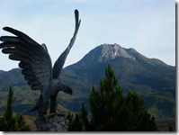

3D Model (Touch and Rotate)
A landform is a natural or artificial feature of the solid surface of the Earth or other planetary body. Landforms together make up a given terrain, and their arrangement in the landscape is known as topography.
Philippines is a beautiful country because it has different land and water formations that shaped our country. Here are some land forms in the Philippines:
Volcano (Bulkan)
A volcano is a mountain with a large hole at the top. There are active volcanoes and inactive volcanoes found in the Philippines. We have almost 200 volcanoes, but only 22 volcanoes are active. Mayon volcano is an example of an active volcano. It is located in Bicol province. It is one of the beautiful volcanoes because of its perfect cone. Another example is found in Talisay, Batangas. It is known as Taal Volcano. This is the smallest volcano in the world, and you will be amazed how beautiful it is.
Hill (Burol)
A hill is a high mass of land less than a mountain. It is still a part of a mountain, but it is in the lower part. This land form is used by farmers to graze their cows, goats, and carabaos because of its abundant grass and plants. Chocolate Hill is the famous hill in the Philippines found in Bohol.
Plain (Kapatagan)
A plain is a wide and flat land. Most developed cities in the Philippines are located in a plain land. It is also an ideal place for farming. The plain of Central Luzon is the largest plain in the country. It is also known as the rice granary of the Philippines.
Mountain (Bundok)

Philippines is rich in mountains. Mt. Apo is the highest mountain in the Philippines, and it is located in Davao, Mindanao. The second highest mountain is Mt. Dulang-Dulang found in Bukidnon. The third highest mountain is Mt. Pulag in Benguet. There are four mountain ranges in our country: Sierra Madre Mountains are the longest mountain range; Zambales mountain range;Cordillera mountain range;and Caraballo mountain range.
Plateau (Talampas)
A plateau is a wide plain on top of a hill or mountain. Many farmers lived here because it has a cool weather. It is also ideal for planting and growing vegetables and fruits. Tagaytay City and Baguio City are good examples of beautiful plateau in Philippines.
Valley (Lambak)
A valley is a plain land between the foot of the hills or mountains. Cagayan valley is the largest valley in the country. La Trinidad valley in Benguet is used for planting vegetables and fruits. You can find here different vegetables and fruits.
Cape (Tangos)
A cape is point of land running into the water. Some capes are used for docking sea vessels. Also, some constructions are built for good purposes. An example of a beautiful cape is in Pangasinan. It is called Cape Bolinao. A lighthouse was built there to guide sea travelers.
360° Photo (Touch and Rotate)
VR Landform